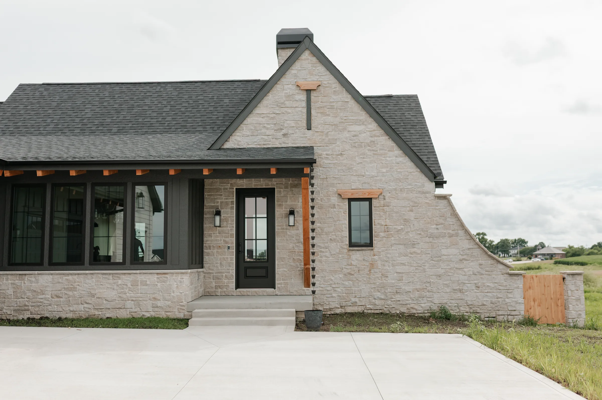
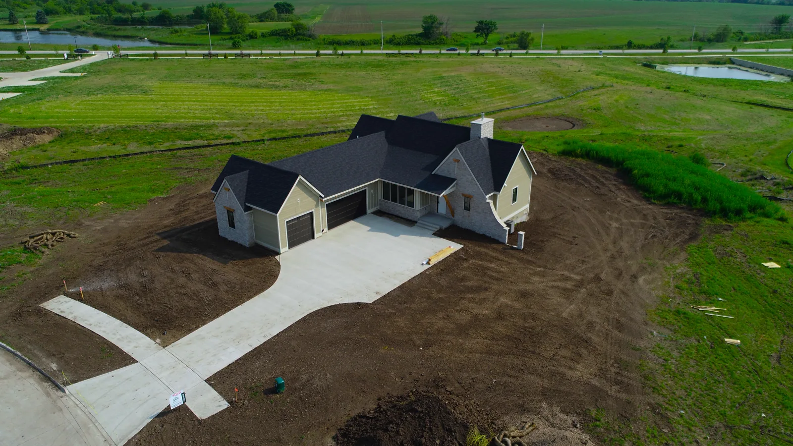
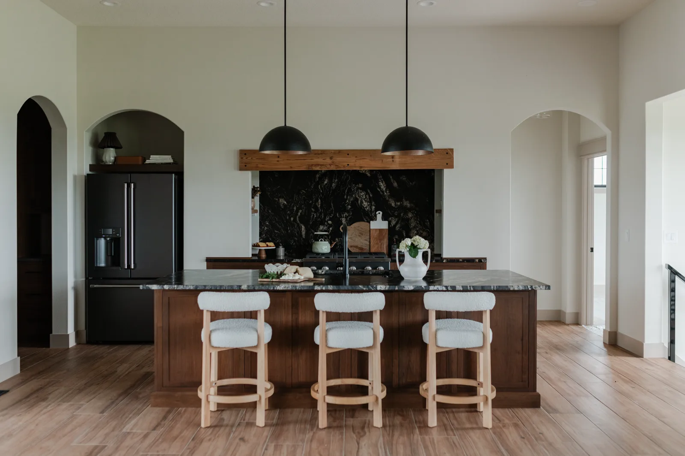
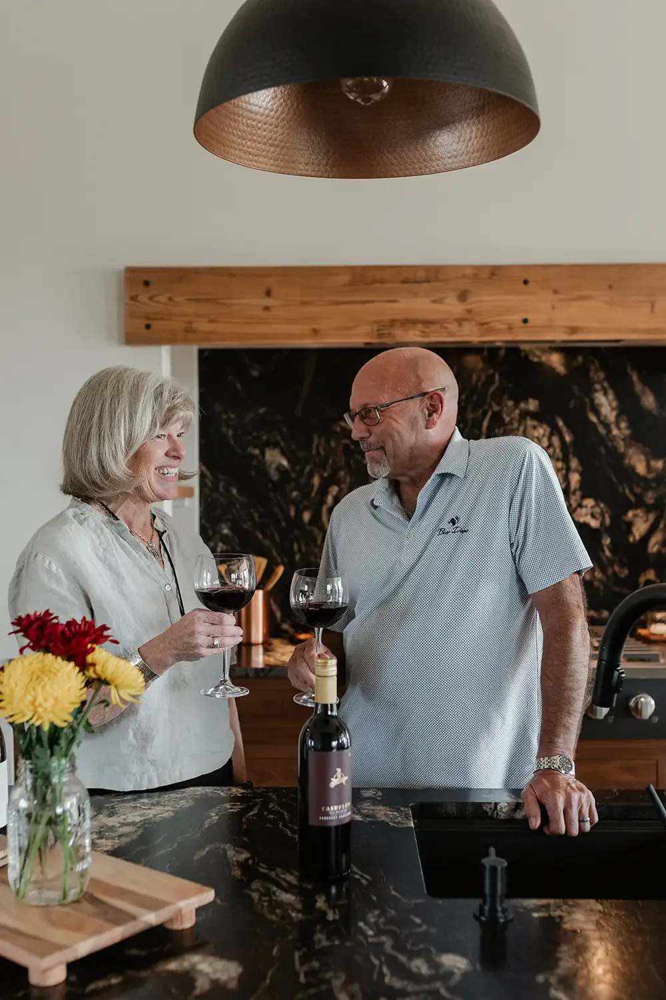
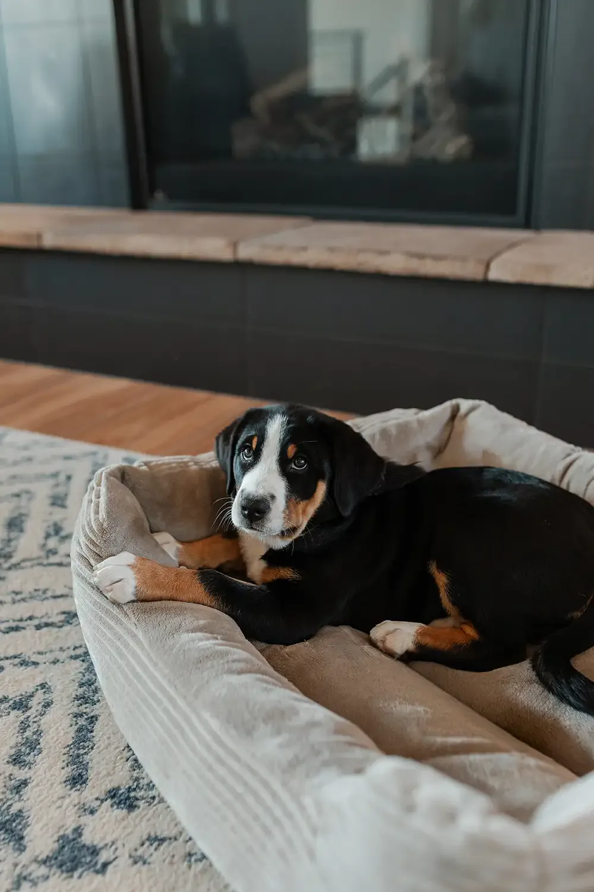
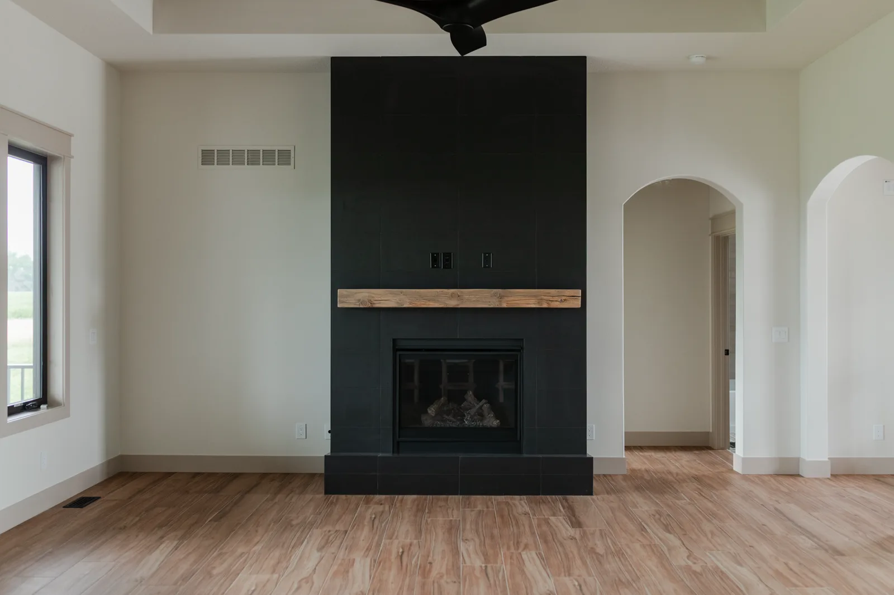
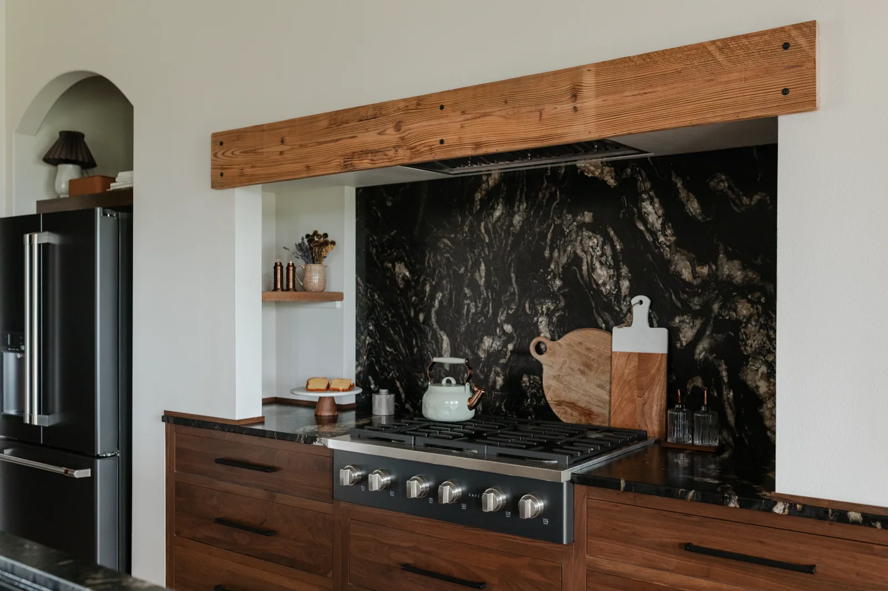
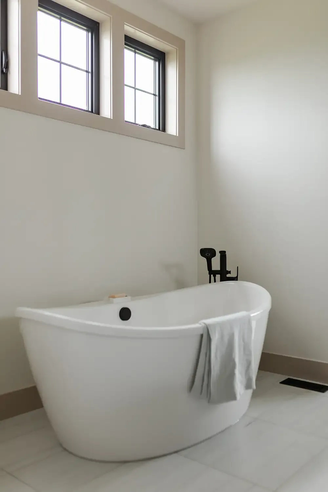
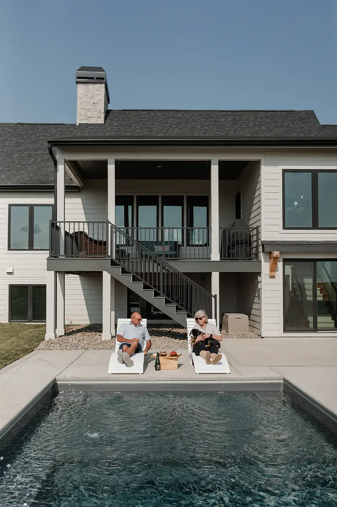
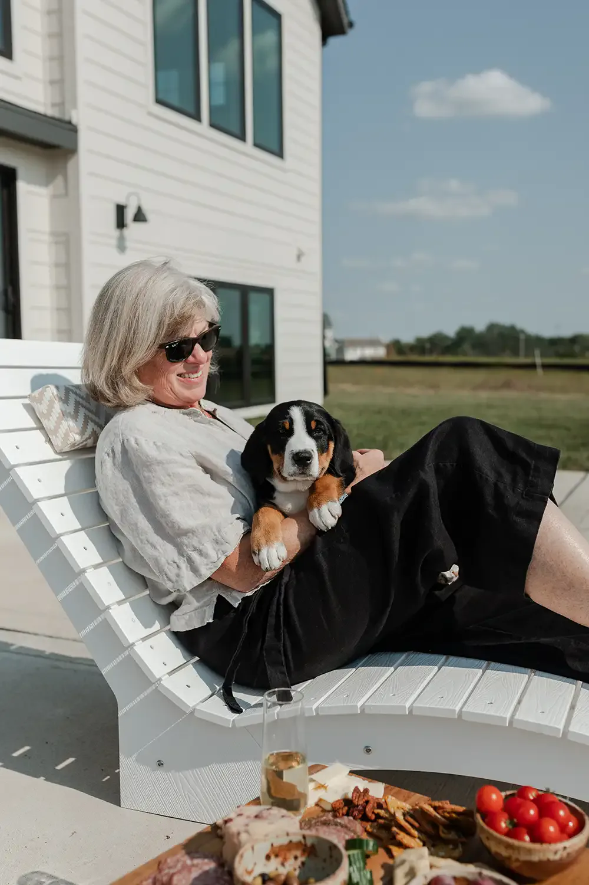

Blog · Building at Middlebrook · November 2026
How a custom home comes together in Great Western Crossing
From an empty lot to a European Romantic home with a pool: one couple’s build, and what it looks like to design your own home at Middlebrook.

Great Western Crossing is Middlebrook’s neighborhood for people who want to build their own home. You choose the lot, bring the plan (or start from one of ours), and pick the builder. One recent build shows what that can look like, from the first meeting to the first swim in the pool.
The homeowners came to Middlebrook from Colorado. They wanted to be near family in Iowa and, just as much, to land in a neighborhood where they would actually know their neighbors. A visit to the Merc and a Friday night at the Farm helped make the case.
1. Start with the lot
They chose a half-acre lot with room for a walkout lower level and a backyard big enough for a pool. Every lot in Great Western Crossing has its own shape, slope, and minimum home size, so it pays to walk a few before deciding. Our lot map shows what is open now.

2. Bring a plan, and talk it through
The couple arrived with custom plans of their own. They reviewed them with Kalen Ludwig and Middlebrook’s town architect, JP Curran, who makes sure every new home fits the neighborhood’s design guidelines. The guidelines keep porches and front doors facing the street and garages from taking over, while still leaving room for a home with real personality. This one landed on a style the owners call European Romantic: light stone, a steep gable, cedar accents, and black windows, with a few touches of Colorado.
No plan of your own? Start with one of the Middlebrook Plans JP drew for Great Western Crossing.
3. Build the list that matters
Every custom home starts with a few things the owners will not give up. For this couple, it was a main-floor primary suite, a kitchen built for two cooks, a sculptural soaking tub, and a pool. Everything else could flex around those.

The kitchen became the center of the house: walnut cabinets, a dark granite counter that runs up the wall as a backsplash, a big gas range, and a working pantry behind it all for the mess. It opens straight into the dining and living areas, so whoever is cooking is never cut off from the room.


4. Choose the finishes, with help
The owners wanted to pick their own finishes, and they did, working alongside the in-house interior designer at Ground Breaker Homes. A few choices tie the house to its farm setting, like reclaimed barn wood from nearby Winterset, used as the fireplace mantel and as a beam over the range.


Plans change during a build, and that is normal. Seeing rooms take shape in person often changes your mind about a finish or a layout. Our team expects it and works through those changes with you.
5. Make room for the way you live
The finished home has about 3,400 square feet across the main and lower levels. The primary suite and a guest room are on the main floor. The lower level holds a TV room, a home office, more guest rooms, and a climate-controlled storage room. Out back, a covered deck steps down to the pool.


6. Then, join in
The best part of building at Middlebrook comes after move-in. The couple, and their Greater Swiss Mountain Dog, have settled right in, with a plot in the community garden and plenty of neighborhood gatherings on the calendar.

Thinking about building your own? Start with the open lots, then reach out to Kalen to talk through your plans.
This home was also featured in Build Magazine, in a story by Carol McGarvey. Photos by Claire Zellmer and Mirza Kudic.